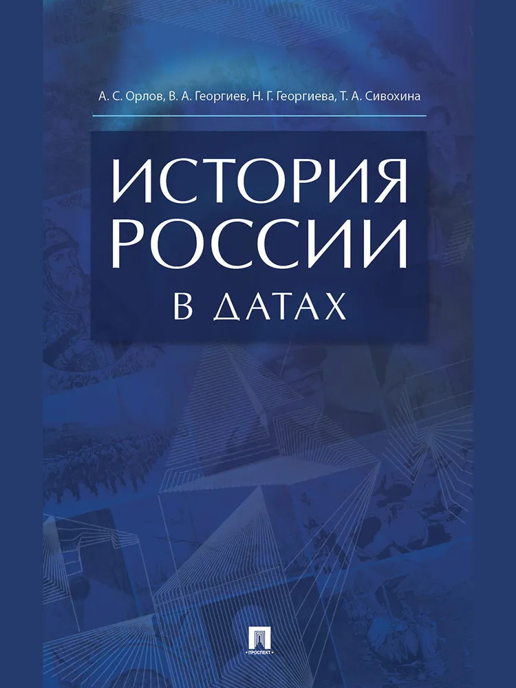

ИСТОРИЯ РОССИИ
«Historia est magistra vitae» («История — наставница жизни»),— говорили древние. И действительно, люди всегда, особенно в переломные периоды жизни человечества, в гигантской лаборатории мирового социального опыта пытаются найти ответ на жгучие вопросы современности
❝История — одна из важнейших форм самосознания людей. Опытом истории стремятся воспользоваться противоборствующие политические силы. Ссылками на историю они обосновывают свои действия.❞
Современная наука пришла к выводу, что все многообразие нынешних космических
объектов образовалось около 20 млрд. лет назад. Солнце — одна из множества звезд нашей
Галактики — возникло 10 млрд. лет назад. Наша Земля — рядовая планета Солнечной системы
— имеет возраст 4,6 млрд. лет. Сейчас принято считать, что человек начал выделяться из
животного мира около 3 млн. лет назад. ....